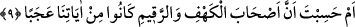
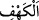
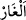
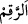
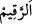
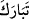
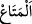

Bir dem Hak ile olmak âlim önünde âlemden iyidir
Herkes burada ne ekerse orada onu biçer
Geriye iyi ve kötü namdan başkası kalmaz
Gönlü dünyanın gönül eğlencesine/sevgilisine bağlama
Çünkü o kiminle oturursa gönlünü koparır
Allah’ım bizi her şeyden kesilip sana yönelenlerden eyle.
9. (Rasûlüm)! Yoksa sen, bizim âyetlerimizden (sadece) Kehf ve Rakîm
sahiplerinin ibrete şâyan olduklarını mı sandın?
“(Rasûlüm)! Yoksa sen, bizim âyetlerimizden (sadece) Kehf ve Rakîm sahiplerinin
ibrete şâyân olduklarını mı sandın?” Buradaki hitap, Rasûlullah (s.a.)’edir.
Kasdedilen ise ümmetinin böyle sanmasını garip karşılamaktır. Yâni ‘zannetmen
gerekmez, neden öyle zannettin?’ demektir.
Kâşifî der ki: “Rivâyet edilir ki yahûdiler, Hz. Risâlet (s.a.)’e sormaları için
Kureyş’e üç soru öğrettiler. Onlar birbirlerine: “Gençlerin kıssası çok tuhaftır. Ondan
da tuhafı O buna nasıl cevap verecektir.” dediler. Bunun üzerine Allah bu âyeti indirdi.
Yâni iş onların söyledikleri gibi değildir. Sen zanneder misin ki bu iş çok tuhaftır.
Halbuki ilâhî kudrete göre öyle değildir.”
“
el-Kehf” dağda olan geniş mağaraya denir. Geniş olmazsa o zaman “
el-
ğâr” denir. “
er-Rakim” ise Rumca köpek demektir.
Rivâyet olunur ki; “Sâhib b. Abbâd; “
er-rakîm,
tebâreke ve
el-metâ”
kelimelerinin anlamı husûsunda tereddüd ediyor ve bunların gerçek anlamını öğrenmek
için Arap kabilelerini dolaşıyordu: Bir kadının çocuğundan “Metâ‘ nerede?” diye
sorduğunu işitti. Çocuk annesine şu cevabı verdi: “er-Rakîm ehaze’l-metâa ve
tebâreke’l-cebel = Rakîm metâı aldı ve dağa tırmandı.” Çocuğa bu kelimelerin ne
anlama geldiğini sordu. “er-Rakîm”in köpek, “metâ”ın suyla ıslatılıp yer silinen bez
parçası, “tebâreke”nin ise yükselmek, yukarı çıkmak anlamında olduğunu öğrendi.”
el-Kamûs’da şöyle der: “er-Rakîm, Ashâb-ı Kehfin köyünün veya bulundukları dağın
yahut onların köpeklerinin ya da bir vâdinin veya bir sahrânın adıdır. Ya da üzerine
Ashâb-ı Kehfin isimlerinin, soylarının, dinlerinin ve içinde bulundukları toplumdan
niçin kaçtıklarının yazıldığı taştan veya kurşundan bir levhadır. Bu, mağaranın kapısına
dikilmiş bir kitâbedir.
Taberî şöyle der: “O günkü kralın evinde Allah’a inanmış iki adam vardı: Adları
Yenderus ve Runas idi. Bunlar Ashâb-ı Kehfin isimlerini, soylarını ve başlarından
geçen hâdiseleri kurşundan bir levhaya yazıp bakırdan bir sandığa koyarak mağaranın